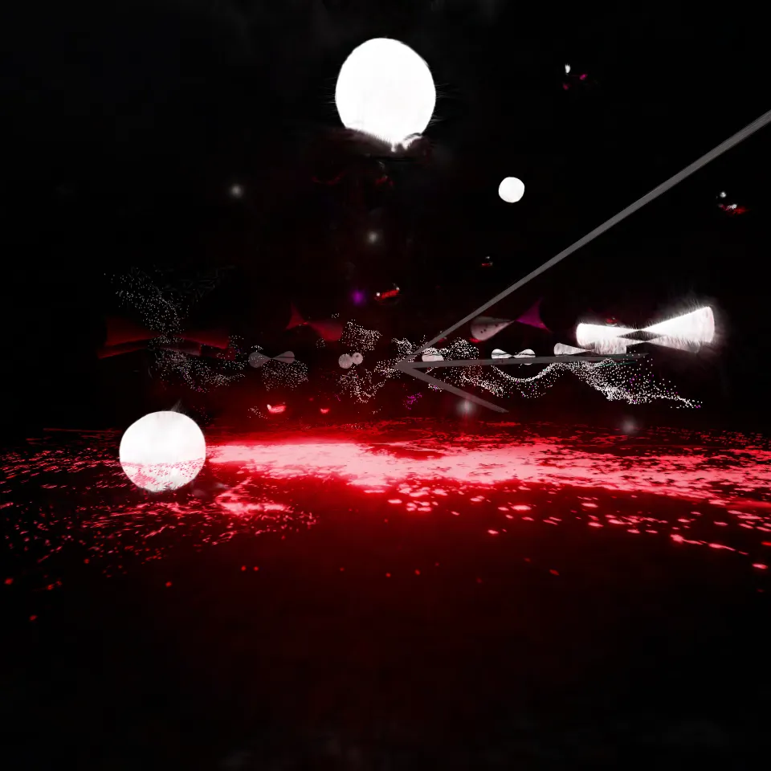

跳到主操作

VIRTURA
STUDIO
SPACE
TIMER / SPATIAL ARCHIVE
SCENE 0531 · 3DGS
VIRTURA / WORKS / 2024 → 2026
TIMER
开启高斯背景 ↗
查看作品档案 ↗
操控空间 / ORBIT
EXPERIMENT 01 / EXISTING SUPERSPLAT ASSET
DESIGN TEST — NOT RELEASED AVP APP
返回界面 / EXIT CAMERA